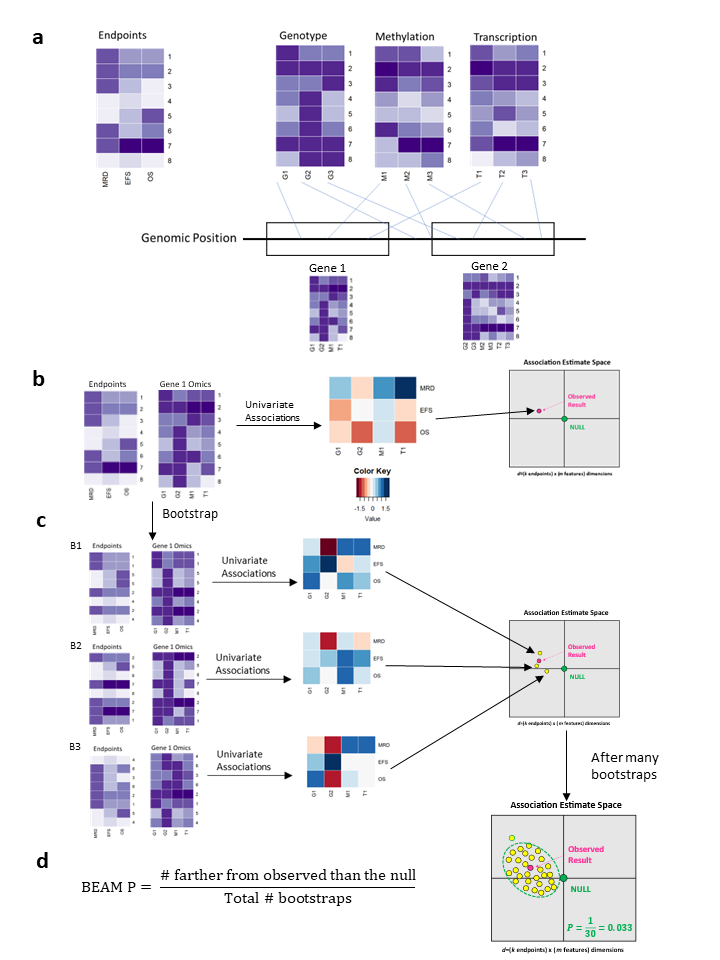
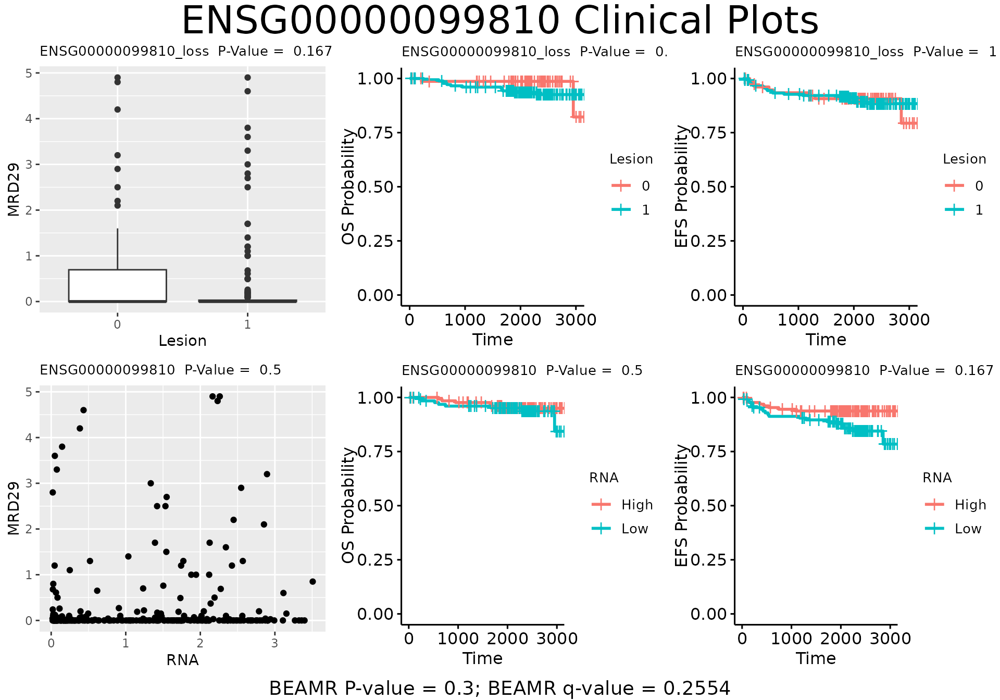
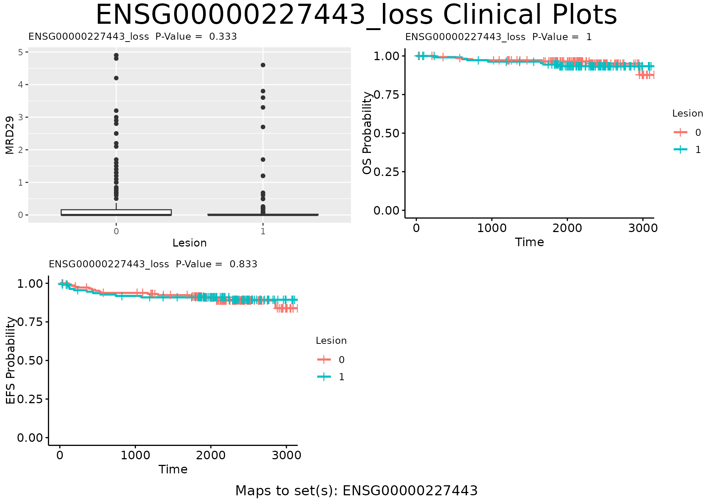

Introduction
Bootstrap Evaluation of Association Matrices (BEAMR) is a method to integrate multiple forms of omics data with multiple clinical endpoints. BEAMR uses simple association models and bootstrapping to provide a consolidated gene ranking using all of the feature/endpoint associations.
Here is a brief overview of BEAMR. First, define sets that link the genomic features from each omic dataset to a “set”. This set could be any meaningful grouping of features, such as gene, pathway, etc. Next, for each set, compute the association estimate matrix (AEM), which is a matrix of regression coefficients from univariate association models of each endpoint with each feature in that set. Then we consider the AEM as a point in multivariate association estiamte space and determine its distance from the null point of no association (all entries in the AEM=0). Finally, we use bootstrap resampling to determine if the observed set is significantly different from the null. This is illustrated in Figure 1.

In this vignette, we describe how to use the BEAMR package with a pediatric T-ALL example dataset from COG trial AALL0434 published in Liu et al., 2017. This dataset contains 265 patients, three clinical endpoints, and two omics.
The Data
The clinical data are saved in . The three clinical endpoints are minimal residual disease measured at Day 29 (MRD29), event-free survival (EFS), and overall survival (OS).
head(clinf)
#> ID MRD29 RNA.clm Lesion.clm Lesion.id RNA.id EFS OS
#> PARASZ PARASZ 0.000 PARASZ PARASZ PARASZ PARASZ 3087+ 3087+
#> PARAYM PARAYM 0.000 PARAYM PARAYM PARAYM PARAYM 3399+ 3399+
#> PARCVM PARCVM 0.000 PARCVM PARCVM PARCVM PARCVM 2424+ 2424+
#> PAREGZ PAREGZ 0.490 PAREGZ PAREGZ PAREGZ PAREGZ 3087+ 3087+
#> PARFDL PARFDL 0.000 PARFDL PARFDL PARFDL PARFDL 3075+ 3075+
#> PARFIH PARFIH 0.028 PARFIH PARFIH PARFIH PARFIH 1099+ 1099+There are two omics datasets included here. is an indicator matrix denoting the presence or absence of a lesion. is a matrix of gene expression.
omicdat$Lesion[1:5, 1:5]
#> PARWNW PASXUC PATXNR PASYIS PATBGC
#> ENSG00000264545_loss 1 1 1 1 0
#> ENSG00000147889_loss 1 1 1 1 0
#> ENSG00000224854_loss 1 1 1 1 0
#> ENSG00000148400_mutation 1 1 1 1 0
#> ENSG00000099810_loss 1 1 1 1 0
omicdat$RNA[1:5, 1:5]
#> PARFIH PARFPJ PARFXJ PARKLK PARLJA
#> ENSG00000121410 0.4976379 0.29994795 1.13973142 0.32584690 0.35940872
#> ENSG00000148584 0.0000000 0.00000000 0.00000000 0.00000000 0.00000000
#> ENSG00000175899 0.0176369 0.11316706 0.02913480 0.00992041 0.02672925
#> ENSG00000166535 0.0000000 0.02261638 0.01278318 0.01735184 0.00000000
#> ENSG00000184389 0.1067503 1.46126661 0.32734246 0.56042150 0.49385225Prepare BEAMR Data
To use BEAMR, we need the data in a specific format. This can be
accomplished with the prep_beam_data() function. In
addition to the clinical and omics data, this function also requires
omic annotation and set data input. The omics annotation has id and gene
columns.
head(omicann$Lesion)
#> id gene
#> 1 ENSG00000264545_loss ENSG00000264545
#> 2 ENSG00000147889_loss ENSG00000147889
#> 3 ENSG00000224854_loss ENSG00000224854
#> 4 ENSG00000148400_mutation ENSG00000148400
#> 5 ENSG00000099810_loss ENSG00000099810
#> 6 ENSG00000264801_loss ENSG00000264801
head(omicann$RNA)
#> id gene
#> 1 ENSG00000121410 ENSG00000121410
#> 2 ENSG00000148584 ENSG00000148584
#> 3 ENSG00000175899 ENSG00000175899
#> 4 ENSG00000166535 ENSG00000166535
#> 5 ENSG00000184389 ENSG00000184389
#> 6 ENSG00000128274 ENSG00000128274The set data input contains the mapping from the omics features to the sets. It is a data.frame with columns “set.id”, “mtx”, and “row.id”. “set.id” is the name of the set, which is Ensembl ID in this example. “mtx” defines the omic type (e.g., “Lesion” or “RNA”). “row.id” is the feature name, which must be an element of the rownames of the omics matrices.
head(setdat)
#> set.id mtx.id row.id
#> 1 ENSG00000121410 RNA ENSG00000121410
#> 2 ENSG00000148584 RNA ENSG00000148584
#> 3 ENSG00000175899 RNA ENSG00000175899
#> 4 ENSG00000166535 RNA ENSG00000166535
#> 5 ENSG00000184389 RNA ENSG00000184389
#> 6 ENSG00000128274 RNA ENSG00000128274With these components, we can now call prep_beam_data().
We also specify the number of bootstrap replicates with the “n.boot”
arguement and can set the seed for reproducibility. The output is a
beam.data object, which is a list with main.data (clinf), mtx.data
(omicdat), mtx.anns (omicann), anns.mtch (summary of omic annotation),
set.data (setdat), set.anns, and boot.index (indices of bootstrap
resamples).
beam.data <- prep_beam_data(main.data=clinf, mtx.data=omicdat,
mtx.anns=omicann, set.data=setdat,
set.anns=NULL, n.boot=10, seed=123)
#> Checking inputs: Tue Jul 9 18:41:27 2024
#> Checking that each element of mtx.data is a matrix: Tue Jul 9 18:41:27 2024
#> Checking that each element of mtx.anns is a data.frame: Tue Jul 9 18:41:27 2024
#> Aligning main.data with each mtx.data: Tue Jul 9 18:41:27 2024
#> Working on mtx.data Lesion (1 of 2): Tue Jul 9 18:41:27 2024
#> Working on mtx.data RNA (2 of 2): Tue Jul 9 18:41:27 2024
#> Warning in get_id_index(main.data, mtx.clms): Some ids not matched; returning
#> NAs for those.
#> Working on mtx.anns: Tue Jul 9 18:41:27 2024
#> Matching matrix 1 with annotations: Tue Jul 9 18:41:27 2024
#> Matching matrix 2 with annotations: Tue Jul 9 18:41:27 2024
#> Checking set.data: Tue Jul 9 18:41:27 2024
#> Ordering and indexing set.data: Tue Jul 9 18:41:27 2024
#> Checking section 1 of 40 of set.data: Tue Jul 9 18:41:27 2024
#> Generating bootstrap index matrix: Tue Jul 9 18:41:27 2024
#> Packaging and returning result: Tue Jul 9 18:41:27 2024
beam.data
#> main.data: 265 rows and 8 columns.
#>
#> ID MRD29 RNA.clm Lesion.clm Lesion.id
#> PARASZ PARASZ 0.00 46 21 PARASZ
#> PARAYM PARAYM 0.00 47 108 PARAYM
#> PARCVM PARCVM 0.00 15 84 PARCVM
#> PAREGZ PAREGZ 0.49 170 142 PAREGZ
#> PARFDL PARFDL 0.00 184 175 PARFDL
#>
#> mtx.data:
#> mtx.data Lesion: 265 columns linked to 265 rows of main.data.
#> mtx.data RNA: 264 columns linked to 264 rows of main.data.
#>
#> Lesion:
#> PARWNW PASXUC PATXNR PASYIS PATBGC
#> ENSG00000264545_loss 1 1 1 1 0
#> ENSG00000147889_loss 1 1 1 1 0
#> ENSG00000224854_loss 1 1 1 1 0
#> ENSG00000148400_mutation 1 1 1 1 0
#> ENSG00000099810_loss 1 1 1 1 0
#>
#> RNA:
#> PARFIH PARFPJ PARFXJ PARKLK PARLJA
#> ENSG00000121410 0.4976379 0.29994795 1.13973142 0.32584690 0.35940872
#> ENSG00000148584 0.0000000 0.00000000 0.00000000 0.00000000 0.00000000
#> ENSG00000175899 0.0176369 0.11316706 0.02913480 0.00992041 0.02672925
#> ENSG00000166535 0.0000000 0.02261638 0.01278318 0.01735184 0.00000000
#> ENSG00000184389 0.1067503 1.46126661 0.32734246 0.56042150 0.49385225
#>
#> mtx.anns:
#> Lesion: 20 rows and 2 columns.
#> RNA: 20 rows and 2 columns.
#>
#> Lesion:
#> id gene
#> 1 ENSG00000264545_loss ENSG00000264545
#> 2 ENSG00000147889_loss ENSG00000147889
#> 3 ENSG00000224854_loss ENSG00000224854
#> 4 ENSG00000148400_mutation ENSG00000148400
#> 5 ENSG00000099810_loss ENSG00000099810
#>
#> RNA:
#> id gene
#> 1 ENSG00000121410 ENSG00000121410
#> 2 ENSG00000148584 ENSG00000148584
#> 3 ENSG00000175899 ENSG00000175899
#> 4 ENSG00000166535 ENSG00000166535
#> 5 ENSG00000184389 ENSG00000184389
#>
#> anns.mtch:
#> mtx.data mtx.anns id.clm nrow.mtx nrow.ann nrow.map
#> 1 Lesion Lesion id 20 20 20
#> 2 RNA RNA id 20 20 20
#>
#> set.data: 40 rows assigning sets to data.mtx rows.
#> set.id mtx.id row.id
#> 9 ENSG00000081760 RNA ENSG00000081760
#> 8 ENSG00000094914 RNA ENSG00000094914
#> 25 ENSG00000099810 Lesion ENSG00000099810_loss
#> 19 ENSG00000099810 RNA ENSG00000099810
#> 14 ENSG00000109576 RNA ENSG00000109576
#> 10 ENSG00000114771 RNA ENSG00000114771
#>
#>
#> set.anns: rows of set annotations.
#>
#> boot.index: 11 rows and 265 columns of bootstrap indices.
#> [,1] [,2] [,3] [,4] [,5]
#> [1,] 1 2 3 4 5
#> [2,] 179 14 195 118 229
#> [3,] 108 8 114 261 29
#> [4,] 55 19 241 218 155
#> [5,] 145 200 211 69 46Before calculating the association estimate matrix, we need to
specify the models to fit. We do this through “beam.specs” which can be
generated automatically using prep_beam_specs(). This
function defines the model form based on the endpoint type. The
option uses Firth penalized Cox models which are useful in the presence
of rare events or omics.
beam.specs <- prep_beam_specs(beam.data=beam.data, endpts=c("MRD29", "OS", "EFS"), firth=TRUE)
#> MRD29 is continuous, fitting lm
#> OS is survival endpoint, fitting coxphf2
#> EFS is survival endpoint, fitting coxphf2
beam.specs
#> name mtx mdl
#> 1 Lesion.MRD29 Lesion lm(MRD29~mtx.row,data=main.data,model=T)
#> 2 RNA.MRD29 RNA lm(MRD29~mtx.row,data=main.data,model=T)
#> 3 Lesion.OS Lesion coxphf2(OS~mtx.row,data=main.data,model=T)
#> 4 RNA.OS RNA coxphf2(OS~mtx.row,data=main.data,model=T)
#> 5 Lesion.EFS Lesion coxphf2(EFS~mtx.row,data=main.data,model=T)
#> 6 RNA.EFS RNA coxphf2(EFS~mtx.row,data=main.data,model=T)Users may also specify their own models by entering an optional “endptmdl” argument, which is a data.frame with string columns called “endpt” and “mdl”.
Calculate Association Statistics
With the beam.data and beam.specs we can now calculate the association statistics for all omics and all endpoints in the original data and the included bootstrap resamples. This can take a long time depending on the size of your data, and is a natural place to parallelize by computing the statistics for the original data and each bootstrap dataset separately and then recombining.
beam.stats <- compute_beam_stats(beam.data=beam.data, beam.specs=beam.specs)
#> Working on analysis 1 of 6 : Tue Jul 9 18:41:28 2024
#> Working on bootstrap 0 of 11 : Tue Jul 9 18:41:28 2024
#> Working on bootstrap 10 of 11 : Tue Jul 9 18:41:28 2024
#> Working on analysis 2 of 6 : Tue Jul 9 18:41:28 2024
#> Working on bootstrap 0 of 11 : Tue Jul 9 18:41:28 2024
#> Working on bootstrap 10 of 11 : Tue Jul 9 18:41:28 2024
#> Working on analysis 3 of 6 : Tue Jul 9 18:41:28 2024
#> Working on bootstrap 0 of 11 : Tue Jul 9 18:41:28 2024
#> Working on bootstrap 10 of 11 : Tue Jul 9 18:41:43 2024
#> Working on analysis 4 of 6 : Tue Jul 9 18:41:44 2024
#> Working on bootstrap 0 of 11 : Tue Jul 9 18:41:44 2024
#> Working on bootstrap 10 of 11 : Tue Jul 9 18:42:00 2024
#> Working on analysis 5 of 6 : Tue Jul 9 18:42:02 2024
#> Working on bootstrap 0 of 11 : Tue Jul 9 18:42:02 2024
#> Working on bootstrap 10 of 11 : Tue Jul 9 18:42:17 2024
#> Working on analysis 6 of 6 : Tue Jul 9 18:42:19 2024
#> Working on bootstrap 0 of 11 : Tue Jul 9 18:42:19 2024
#> Working on bootstrap 10 of 11 : Tue Jul 9 18:42:37 2024
beam.stats
#> Contains 6 association estimate matrices with 10 bootstraps:
#> Association Estimate Matrix of Lesion with MRD29 has dimensions 20 x 11.
#> Association Estimate Matrix of RNA with MRD29 has dimensions 20 x 11.
#> Association Estimate Matrix of Lesion with OS has dimensions 20 x 11.
#> Association Estimate Matrix of RNA with OS has dimensions 20 x 11.
#> Association Estimate Matrix of Lesion with EFS has dimensions 20 x 11.
#> Association Estimate Matrix of RNA with EFS has dimensions 20 x 11.
#>
#> Example Association Estimate Matrix for Lesion with MRD29:
#> boot_0 boot_1 boot_2 boot_3
#> ENSG00000264545_loss -0.19093600 -0.18285072 -0.21417250 -0.20583809
#> ENSG00000147889_loss -0.19931154 -0.17555327 -0.20297360 -0.19104882
#> ENSG00000224854_loss -0.18613078 -0.17555327 -0.21375800 -0.18794477
#> ENSG00000148400_mutation -0.02983458 -0.03084684 0.05543433 -0.01137685
#> ENSG00000099810_loss -0.13672414 -0.12616440 -0.16711568 -0.11536782
#> boot_4
#> ENSG00000264545_loss -0.156257583
#> ENSG00000147889_loss -0.210577002
#> ENSG00000224854_loss -0.163050513
#> ENSG00000148400_mutation -0.001250098
#> ENSG00000099810_loss -0.090666306
#>
#> Example Association Estimate Matrix for RNA with MRD29:
#> boot_0 boot_1 boot_2 boot_3 boot_4
#> ENSG00000121410 0.045547007 0.004894953 0.11539090 0.091368164 0.12737124
#> ENSG00000148584 -0.043899068 -0.027183517 -0.03688248 -0.066976684 -0.06705541
#> ENSG00000175899 0.071592760 0.035710522 0.08890343 0.060304200 0.04032931
#> ENSG00000166535 0.000296431 -0.011542505 -0.07000542 0.003024411 0.03280950
#> ENSG00000184389 0.088934788 0.053931057 0.12269236 0.205216952 0.11770464
#>
#> Example Association Estimate Matrix for Lesion with OS:
#> boot_0 boot_1 boot_2 boot_3
#> ENSG00000264545_loss 0.8932939 0.82087274 0.7774685 1.007661292
#> ENSG00000147889_loss 0.9489993 0.84854596 0.8068623 1.045121725
#> ENSG00000224854_loss 0.9563505 0.84854596 0.8400789 1.095728463
#> ENSG00000148400_mutation -0.0989406 0.04244735 0.1444102 -0.081025546
#> ENSG00000099810_loss 0.3328451 0.53394399 -0.1096147 0.003899453
#> boot_4
#> ENSG00000264545_loss 1.116271049
#> ENSG00000147889_loss 1.172808630
#> ENSG00000224854_loss 1.139336521
#> ENSG00000148400_mutation 0.008572771
#> ENSG00000099810_loss 0.583670072
#>
#> Example Association Estimate Matrix for RNA with OS:
#> boot_0 boot_1 boot_2 boot_3 boot_4
#> ENSG00000121410 -0.06064136 0.08833406 0.19740235 -0.23032144 0.042520410
#> ENSG00000148584 0.05061313 0.19634699 0.13935280 -0.04349620 -0.308207853
#> ENSG00000175899 0.02594285 0.03512339 0.06672908 -0.11478157 -0.057850041
#> ENSG00000166535 -0.09119894 -0.16775731 -0.97860178 -0.05163522 0.036242601
#> ENSG00000184389 -0.13155891 -0.34544421 -0.27764175 -0.10397644 0.009883494
#>
#> Example Association Estimate Matrix for Lesion with EFS:
#> boot_0 boot_1 boot_2 boot_3
#> ENSG00000264545_loss 0.311047946 0.192434740 -0.027644863 0.45783281
#> ENSG00000147889_loss 0.355335350 0.212469747 -0.005443877 0.49058097
#> ENSG00000224854_loss 0.358707580 0.212469747 0.010605097 0.52911969
#> ENSG00000148400_mutation -0.008535379 0.101993852 -0.185038910 -0.09593391
#> ENSG00000099810_loss -0.015810223 0.006761143 -0.488404478 -0.18680785
#> boot_4
#> ENSG00000264545_loss 0.6079674
#> ENSG00000147889_loss 0.6584991
#> ENSG00000224854_loss 0.6237131
#> ENSG00000148400_mutation 0.1068464
#> ENSG00000099810_loss 0.2182788
#>
#> Example Association Estimate Matrix for RNA with EFS:
#> boot_0 boot_1 boot_2 boot_3 boot_4
#> ENSG00000121410 0.05921417 0.1825319 0.34583467 0.1120400 0.07337122
#> ENSG00000148584 0.17012792 0.2792833 0.35866190 0.2208551 -0.50231550
#> ENSG00000175899 -0.11536335 -0.1158022 -0.02586119 -5.6659243 -3.05803752
#> ENSG00000166535 0.24454397 0.3871298 0.45451663 0.2155649 0.19137130
#> ENSG00000184389 -0.13690629 -0.2247154 -0.12818200 -0.2024793 -0.02224107
#>
#> Example Endpoint Data:
#> MRD29 EFS OS
#> PARASZ 0.00 3087+ 3087+
#> PARAYM 0.00 3399+ 3399+
#> PARCVM 0.00 2424+ 2424+
#> PAREGZ 0.49 3087+ 3087+
#> PARFDL 0.00 3075+ 3075+
#>
#> BEAM Model Specifications:
#> name mtx mdl
#> 1 Lesion.MRD29 Lesion lm(MRD29~mtx.row,data=main.data,model=T)
#> 2 RNA.MRD29 RNA lm(MRD29~mtx.row,data=main.data,model=T)
#> 3 Lesion.OS Lesion coxphf2(OS~mtx.row,data=main.data,model=T)
#> 4 RNA.OS RNA coxphf2(OS~mtx.row,data=main.data,model=T)
#> 5 Lesion.EFS Lesion coxphf2(EFS~mtx.row,data=main.data,model=T)
#> 6 RNA.EFS RNA coxphf2(EFS~mtx.row,data=main.data,model=T)
#>
#> BEAM data used to create Association Estimate Matrices:
#> main.data: 265 rows and 8 columns.
#>
#> ID MRD29 RNA.clm Lesion.clm Lesion.id
#> PARASZ PARASZ 0.00 46 21 PARASZ
#> PARAYM PARAYM 0.00 47 108 PARAYM
#> PARCVM PARCVM 0.00 15 84 PARCVM
#> PAREGZ PAREGZ 0.49 170 142 PAREGZ
#> PARFDL PARFDL 0.00 184 175 PARFDL
#>
#> mtx.data:
#> mtx.data Lesion: 265 columns linked to 265 rows of main.data.
#> mtx.data RNA: 264 columns linked to 264 rows of main.data.
#>
#> Lesion:
#> PARWNW PASXUC PATXNR PASYIS PATBGC
#> ENSG00000264545_loss 1 1 1 1 0
#> ENSG00000147889_loss 1 1 1 1 0
#> ENSG00000224854_loss 1 1 1 1 0
#> ENSG00000148400_mutation 1 1 1 1 0
#> ENSG00000099810_loss 1 1 1 1 0
#>
#> RNA:
#> PARFIH PARFPJ PARFXJ PARKLK PARLJA
#> ENSG00000121410 0.4976379 0.29994795 1.13973142 0.32584690 0.35940872
#> ENSG00000148584 0.0000000 0.00000000 0.00000000 0.00000000 0.00000000
#> ENSG00000175899 0.0176369 0.11316706 0.02913480 0.00992041 0.02672925
#> ENSG00000166535 0.0000000 0.02261638 0.01278318 0.01735184 0.00000000
#> ENSG00000184389 0.1067503 1.46126661 0.32734246 0.56042150 0.49385225
#>
#> mtx.anns:
#> Lesion: 20 rows and 2 columns.
#> RNA: 20 rows and 2 columns.
#>
#> Lesion:
#> id gene
#> 1 ENSG00000264545_loss ENSG00000264545
#> 2 ENSG00000147889_loss ENSG00000147889
#> 3 ENSG00000224854_loss ENSG00000224854
#> 4 ENSG00000148400_mutation ENSG00000148400
#> 5 ENSG00000099810_loss ENSG00000099810
#>
#> RNA:
#> id gene
#> 1 ENSG00000121410 ENSG00000121410
#> 2 ENSG00000148584 ENSG00000148584
#> 3 ENSG00000175899 ENSG00000175899
#> 4 ENSG00000166535 ENSG00000166535
#> 5 ENSG00000184389 ENSG00000184389
#>
#> anns.mtch:
#> mtx.data mtx.anns id.clm nrow.mtx nrow.ann nrow.map
#> 1 Lesion Lesion id 20 20 20
#> 2 RNA RNA id 20 20 20
#>
#> set.data: 40 rows assigning sets to data.mtx rows.
#> set.id mtx.id row.id
#> 9 ENSG00000081760 RNA ENSG00000081760
#> 8 ENSG00000094914 RNA ENSG00000094914
#> 25 ENSG00000099810 Lesion ENSG00000099810_loss
#> 19 ENSG00000099810 RNA ENSG00000099810
#> 14 ENSG00000109576 RNA ENSG00000109576
#> 10 ENSG00000114771 RNA ENSG00000114771
#>
#>
#> set.anns: rows of set annotations.
#>
#> boot.index: 11 rows and 265 columns of bootstrap indices.
#> [,1] [,2] [,3] [,4] [,5]
#> [1,] 1 2 3 4 5
#> [2,] 179 14 195 118 229
#> [3,] 108 8 114 261 29
#> [4,] 55 19 241 218 155
#> [5,] 145 200 211 69 46Calculate Set and Feature-Level P-Values
Now we can use the beam.stats to find the set and feature-level p-values.
Set-level p-values: By default, the BEAMR set p-values are for the integration of all available omics and endpoints. The result is a list, and the BEAMR p-values are in the “set.pvals” entry.
set.pvals <- compute_set_pvalues(beam.stats)
#> Preparing bootstrap results for calculating feature set p-values: Tue Jul 9 18:42:39 2024
#> Finding stats for each data matrix:Tue Jul 9 18:42:39 2024
#> Finding stats for data matrix Lesion: Tue Jul 9 18:42:39 2024
#> Finding features with with Lesion.MRD29 stats: Tue Jul 9 18:42:39 2024
#> Finding features with with Lesion.OS stats: Tue Jul 9 18:42:39 2024
#> Finding features with with Lesion.EFS stats: Tue Jul 9 18:42:39 2024
#> Finding stats for data matrix RNA: Tue Jul 9 18:42:39 2024
#> Finding features with with RNA.MRD29 stats: Tue Jul 9 18:42:39 2024
#> Finding features with with RNA.OS stats: Tue Jul 9 18:42:39 2024
#> Finding features with with RNA.EFS stats: Tue Jul 9 18:42:39 2024
#> Found 120 rows of stats: Tue Jul 9 18:42:39 2024
#> Merging stats with feature-sets: Tue Jul 9 18:42:39 2024
#> Merged feature-set stat rows: 120
#> Ordering and indexing feature sets: Tue Jul 9 18:42:39 2024
#> Cleaning up beam.stat matrices:Tue Jul 9 18:42:39 2024
#> Working on matrix 1 of 6: Tue Jul 9 18:42:39 2024
#> Working on matrix 2 of 6: Tue Jul 9 18:42:39 2024
#> Working on matrix 3 of 6: Tue Jul 9 18:42:39 2024
#> Working on matrix 4 of 6: Tue Jul 9 18:42:39 2024
#> Working on matrix 5 of 6: Tue Jul 9 18:42:39 2024
#> Working on matrix 6 of 6: Tue Jul 9 18:42:39 2024
#> row.start row.end set.id
#> 1 1 3 ENSG00000081760
#> 2 4 6 ENSG00000094914
#> 3 7 12 ENSG00000099810
#> 4 13 15 ENSG00000109576
#> 5 16 18 ENSG00000114771
#> 6 19 21 ENSG00000118017
#> row.start row.end set.id stat.id
#> 1 1 1 ENSG00000081760 RNA.EFS
#> 2 2 2 ENSG00000081760 RNA.MRD29
#> 3 3 3 ENSG00000081760 RNA.OS
#> 4 4 4 ENSG00000094914 RNA.EFS
#> 5 5 5 ENSG00000094914 RNA.MRD29
#> 6 6 6 ENSG00000094914 RNA.OS
#> mtx.row set.id stat.id row.id
#> 62 RNA_ENSG00000081760 ENSG00000081760 RNA.EFS ENSG00000081760
#> 61 RNA_ENSG00000081760 ENSG00000081760 RNA.MRD29 ENSG00000081760
#> 63 RNA_ENSG00000081760 ENSG00000081760 RNA.OS ENSG00000081760
#> 66 RNA_ENSG00000094914 ENSG00000094914 RNA.EFS ENSG00000094914
#> 64 RNA_ENSG00000094914 ENSG00000094914 RNA.MRD29 ENSG00000094914
#> 65 RNA_ENSG00000094914 ENSG00000094914 RNA.OS ENSG00000094914
#> Computing p-value for feature set 1 of 34: Tue Jul 9 18:42:39 2024
#> 13ENSG00000081760
#> Computing p-value for feature set 26 of 34: Tue Jul 9 18:42:39 2024
#> 9496ENSG00000229835
#> Finished computing p-values at: Tue Jul 9 18:42:39 2024
#> Minimum q-value is 0.106439437831269
#> Creating set p-value data frame.
#> Done creating data frame.
#> Creating list for output.Example of the results:
head(set.pvals$set.pvals)
#> set.id
#> 1 ENSG00000081760
#> 2 ENSG00000094914
#> 3 ENSG00000099810
#> 4 ENSG00000109576
#> 5 ENSG00000114771
#> 6 ENSG00000118017
#> features
#> 1 1 RNA.EFS | 1 RNA.MRD29 | 1 RNA.OS
#> 2 1 RNA.EFS | 1 RNA.MRD29 | 1 RNA.OS
#> 3 1 Lesion.EFS | 1 Lesion.MRD29 | 1 Lesion.OS | 1 RNA.EFS | 1 RNA.MRD29 | 1 RNA.OS
#> 4 1 RNA.EFS | 1 RNA.MRD29 | 1 RNA.OS
#> 5 1 RNA.EFS | 1 RNA.MRD29 | 1 RNA.OS
#> 6 1 RNA.EFS | 1 RNA.MRD29 | 1 RNA.OS
#> mean.from.center origin.to.center distance.ratio p.set q.set
#> 1 2.7 23.261819 8.6154884 0.02970528 0.1112937
#> 2 2.7 1.686417 0.6245987 0.40000000 0.2676141
#> 3 5.4 8.594254 1.5915285 0.30000000 0.2554498
#> 4 2.7 7.262608 2.6898548 0.10000000 0.1440999
#> 5 2.7 39.518499 14.6364811 0.01704578 0.1064394
#> 6 2.7 2.397169 0.8878403 0.40000000 0.2676141The compute_feature_pvalues() function returns a list
for each omics/endpoint pair with univariate associations for all omics
features.
feat.pvals <- compute_feature_pvalues(beam.stats)
#> Computing feature p-values for stat matrix 1 of 6: Tue Jul 9 18:42:39 2024
#> This matrix has 20 features.
#> Computing feature p-values for stat matrix 2 of 6: Tue Jul 9 18:42:39 2024
#> This matrix has 20 features.
#> Computing feature p-values for stat matrix 3 of 6: Tue Jul 9 18:42:39 2024
#> This matrix has 20 features.
#> Computing feature p-values for stat matrix 4 of 6: Tue Jul 9 18:42:39 2024
#> This matrix has 20 features.
#> Computing feature p-values for stat matrix 5 of 6: Tue Jul 9 18:42:39 2024
#> This matrix has 20 features.
#> Computing feature p-values for stat matrix 6 of 6: Tue Jul 9 18:42:39 2024
#> This matrix has 20 features.
names(feat.pvals)
#> [1] "Lesion.MRD29" "RNA.MRD29" "Lesion.OS" "RNA.OS" "Lesion.EFS"
#> [6] "RNA.EFS"Example of the results:
head(feat.pvals$RNA.EFS)
#> id gene beta p q
#> 1 ENSG00000081760 ENSG00000081760 0.39512059 0.1666667 0.1969697
#> 2 ENSG00000094914 ENSG00000094914 0.16586489 0.3333333 0.2888889
#> 3 ENSG00000099810 ENSG00000099810 0.42230413 0.1666667 0.1969697
#> 4 ENSG00000109576 ENSG00000109576 0.08833319 0.5000000 0.3823529
#> 5 ENSG00000114771 ENSG00000114771 0.14483645 0.1666667 0.1969697
#> 6 ENSG00000118017 ENSG00000118017 0.30517260 0.1666667 0.1969697Subset the Results
If you have large data, the beam.stats result file might be very
large, too large to open on a local machine. One option is to filter
this results file, which is needed to evaluate the results and plot. The
subset_beam_result() file allows for filtering based on
many different criteria, such as specify a list fo features, a vector of
set.ids, a vector of endpoints, a vector of omics, and set or
feature-level p/q-value limits. There is an option ot use the
intersection or union of all specified criteria. Additionally, the
set-level p-values can be optionally recalculated, which should be done
if the number of omics or endpoints changes. The example below filters
the beam.stats object to the sets with the top ten smallest set-level
q-values.
beam.stats.filt <- subset_beam_result(beam.stats, set.pvals, feat.pvals, endpts=NULL,
q.limit=10, intersect=TRUE, recalc=FALSE)
#> Working on mtx.anns: Tue Jul 9 18:42:39 2024
#> Matching matrix 1 with annotations: Tue Jul 9 18:42:39 2024
#> Matching matrix 2 with annotations: Tue Jul 9 18:42:39 2024
#> Computing feature p-values for stat matrix 1 of 6: Tue Jul 9 18:42:39 2024
#> This matrix has 6 features.
#> Computing feature p-values for stat matrix 2 of 6: Tue Jul 9 18:42:39 2024
#> This matrix has 7 features.
#> Computing feature p-values for stat matrix 3 of 6: Tue Jul 9 18:42:39 2024
#> This matrix has 6 features.
#> Computing feature p-values for stat matrix 4 of 6: Tue Jul 9 18:42:39 2024
#> This matrix has 7 features.
#> Computing feature p-values for stat matrix 5 of 6: Tue Jul 9 18:42:39 2024
#> This matrix has 6 features.
#> Computing feature p-values for stat matrix 6 of 6: Tue Jul 9 18:42:39 2024
#> This matrix has 7 features.
#> Computing feature p-values for stat matrix 1 of 6: Tue Jul 9 18:42:39 2024
#> This matrix has 6 features.
#> Computing feature p-values for stat matrix 2 of 6: Tue Jul 9 18:42:39 2024
#> This matrix has 7 features.
#> Computing feature p-values for stat matrix 3 of 6: Tue Jul 9 18:42:39 2024
#> This matrix has 6 features.
#> Computing feature p-values for stat matrix 4 of 6: Tue Jul 9 18:42:39 2024
#> This matrix has 7 features.
#> Computing feature p-values for stat matrix 5 of 6: Tue Jul 9 18:42:39 2024
#> This matrix has 6 features.
#> Computing feature p-values for stat matrix 6 of 6: Tue Jul 9 18:42:39 2024
#> This matrix has 7 features.
beam.stats.filt
#> $beam.stats
#> Contains 6 association estimate matrices with 10 bootstraps:
#> Association Estimate Matrix of Lesion with MRD29 has dimensions 6 x 11.
#> Association Estimate Matrix of RNA with MRD29 has dimensions 7 x 11.
#> Association Estimate Matrix of Lesion with OS has dimensions 6 x 11.
#> Association Estimate Matrix of RNA with OS has dimensions 7 x 11.
#> Association Estimate Matrix of Lesion with EFS has dimensions 6 x 11.
#> Association Estimate Matrix of RNA with EFS has dimensions 7 x 11.
#>
#> Example Association Estimate Matrix for Lesion with MRD29:
#> boot_0 boot_1 boot_2 boot_3 boot_4
#> ENSG00000264545_loss -0.19093600 -0.1828507 -0.2141725 -0.20583809 -0.15625758
#> ENSG00000147889_loss -0.19931154 -0.1755533 -0.2029736 -0.19104882 -0.21057700
#> ENSG00000224854_loss -0.18613078 -0.1755533 -0.2137580 -0.18794477 -0.16305051
#> ENSG00000264801_loss -0.13821656 -0.1239665 -0.1639224 -0.11055410 -0.09439548
#> ENSG00000266446_loss -0.09222371 -0.0775523 -0.1134355 -0.06947515 -0.07033315
#>
#> Example Association Estimate Matrix for RNA with MRD29:
#> boot_0 boot_1 boot_2 boot_3 boot_4
#> ENSG00000128274 0.08720496 0.109390028 0.044897331 0.121861752 0.09987658
#> ENSG00000081760 -0.03607313 0.034956223 -0.089175927 0.081705062 -0.06983956
#> ENSG00000114771 0.07002589 0.099323229 0.001406326 0.070103099 0.09474937
#> ENSG00000109576 -0.12047921 -0.134490811 -0.099232706 -0.120472858 -0.12181346
#> ENSG00000224854 0.04198742 -0.002051417 0.007657997 0.002145128 0.04635030
#>
#> Example Association Estimate Matrix for Lesion with OS:
#> boot_0 boot_1 boot_2 boot_3 boot_4
#> ENSG00000264545_loss 0.8932939 0.8208727 0.7774685 1.00766129 1.1162710
#> ENSG00000147889_loss 0.9489993 0.8485460 0.8068623 1.04512173 1.1728086
#> ENSG00000224854_loss 0.9563505 0.8485460 0.8400789 1.09572846 1.1393365
#> ENSG00000264801_loss 0.3681696 0.6134522 -0.1043398 0.04148775 0.6138597
#> ENSG00000266446_loss 0.5760150 0.8063569 0.1638686 0.92763980 0.6092065
#>
#> Example Association Estimate Matrix for RNA with OS:
#> boot_0 boot_1 boot_2 boot_3 boot_4
#> ENSG00000128274 0.16197577 0.09668843 0.1557670 0.23429709 0.2197898
#> ENSG00000081760 0.07025600 0.25418477 0.4471904 0.09829159 0.1214861
#> ENSG00000114771 0.15584991 0.14674332 0.2083145 0.16427747 0.1169206
#> ENSG00000109576 0.09189032 -0.57119111 0.2057833 0.13147781 0.2651223
#> ENSG00000224854 0.06835618 0.30907085 0.2299027 0.22839346 -0.1334088
#>
#> Example Association Estimate Matrix for Lesion with EFS:
#> boot_0 boot_1 boot_2 boot_3 boot_4
#> ENSG00000264545_loss 0.31104795 0.19243474 -0.027644863 0.4578328 0.6079674
#> ENSG00000147889_loss 0.35533535 0.21246975 -0.005443877 0.4905810 0.6584991
#> ENSG00000224854_loss 0.35870758 0.21246975 0.010605097 0.5291197 0.6237131
#> ENSG00000264801_loss 0.01296298 0.06564000 -0.482688007 -0.1595180 0.2405010
#> ENSG00000266446_loss 0.13131513 0.09748747 -0.014785146 0.3507272 0.3510419
#>
#> Example Association Estimate Matrix for RNA with EFS:
#> boot_0 boot_1 boot_2 boot_3 boot_4
#> ENSG00000128274 0.20296851 0.44949340 0.22461005 0.05788957 0.07440748
#> ENSG00000081760 0.40551255 0.48707882 0.45943021 0.38063298 0.34116921
#> ENSG00000114771 0.13935591 0.11748291 0.13784936 0.12321800 0.13015927
#> ENSG00000109576 0.09502053 -0.16961948 0.01397912 0.07915553 0.19728078
#> ENSG00000224854 -0.03123313 0.07555118 -0.03490088 0.07155310 -0.17750700
#>
#> Example Endpoint Data:
#> MRD29 EFS OS
#> PARASZ 0.00 3087+ 3087+
#> PARAYM 0.00 3399+ 3399+
#> PARCVM 0.00 2424+ 2424+
#> PAREGZ 0.49 3087+ 3087+
#> PARFDL 0.00 3075+ 3075+
#>
#> BEAM Model Specifications:
#> name mtx mdl
#> 1 Lesion.MRD29 Lesion lm(MRD29~mtx.row,data=main.data,model=T)
#> 2 RNA.MRD29 RNA lm(MRD29~mtx.row,data=main.data,model=T)
#> 3 Lesion.OS Lesion coxphf2(OS~mtx.row,data=main.data,model=T)
#> 4 RNA.OS RNA coxphf2(OS~mtx.row,data=main.data,model=T)
#> 5 Lesion.EFS Lesion coxphf2(EFS~mtx.row,data=main.data,model=T)
#> 6 RNA.EFS RNA coxphf2(EFS~mtx.row,data=main.data,model=T)
#>
#> BEAM data used to create Association Estimate Matrices:
#> main.data: 265 rows and 8 columns.
#>
#> ID MRD29 RNA.clm Lesion.clm Lesion.id
#> PARASZ PARASZ 0.00 46 21 PARASZ
#> PARAYM PARAYM 0.00 47 108 PARAYM
#> PARCVM PARCVM 0.00 15 84 PARCVM
#> PAREGZ PAREGZ 0.49 170 142 PAREGZ
#> PARFDL PARFDL 0.00 184 175 PARFDL
#>
#> mtx.data:
#> mtx.data Lesion: 265 columns linked to 265 rows of main.data.
#> mtx.data RNA: 264 columns linked to 264 rows of main.data.
#>
#> Lesion:
#> PARWNW PASXUC PATXNR PASYIS PATBGC
#> ENSG00000264545_loss 1 1 1 1 0
#> ENSG00000147889_loss 1 1 1 1 0
#> ENSG00000224854_loss 1 1 1 1 0
#> ENSG00000264801_loss 1 1 1 1 0
#> ENSG00000266446_loss 1 1 1 0 0
#>
#> RNA:
#> PARFIH PARFPJ PARFXJ PARKLK PARLJA
#> ENSG00000128274 0.05672224 0.4579619 0.2620723 0.02147973 0.1392075
#> ENSG00000081760 1.35366204 1.6374711 1.4004286 1.72334012 1.2025118
#> ENSG00000114771 0.00000000 0.0000000 0.0000000 0.00000000 0.0000000
#> ENSG00000109576 2.15911246 0.2559237 2.1404842 0.92850298 1.3338817
#> ENSG00000224854 0.00000000 0.1323794 0.0000000 0.00000000 0.0000000
#>
#> mtx.anns:
#> Lesion: 6 rows and 2 columns.
#> RNA: 7 rows and 2 columns.
#>
#> Lesion:
#> id gene
#> 1 ENSG00000264545_loss ENSG00000264545
#> 2 ENSG00000147889_loss ENSG00000147889
#> 3 ENSG00000224854_loss ENSG00000224854
#> 6 ENSG00000264801_loss ENSG00000264801
#> 9 ENSG00000266446_loss ENSG00000266446
#>
#> RNA:
#> id gene
#> 6 ENSG00000128274 ENSG00000128274
#> 9 ENSG00000081760 ENSG00000081760
#> 10 ENSG00000114771 ENSG00000114771
#> 14 ENSG00000109576 ENSG00000109576
#> 15 ENSG00000224854 ENSG00000224854
#>
#> anns.mtch:
#> mtx.data mtx.anns id.clm nrow.mtx nrow.ann nrow.map
#> 1 Lesion Lesion id 6 6 6
#> 2 RNA RNA id 7 7 7
#>
#> set.data: 13 rows assigning sets to data.mtx rows.
#> set.id mtx.id row.id
#> 9 ENSG00000081760 RNA ENSG00000081760
#> 14 ENSG00000109576 RNA ENSG00000109576
#> 10 ENSG00000114771 RNA ENSG00000114771
#> 6 ENSG00000128274 RNA ENSG00000128274
#> 30 ENSG00000147883 Lesion ENSG00000147883_loss
#> 17 ENSG00000147883 RNA ENSG00000147883
#>
#>
#> set.anns: rows of set annotations.
#>
#> boot.index: 11 rows and 265 columns of bootstrap indices.
#> [,1] [,2] [,3] [,4] [,5]
#> [1,] 1 2 3 4 5
#> [2,] 179 14 195 118 229
#> [3,] 108 8 114 261 29
#> [4,] 55 19 241 218 155
#> [5,] 145 200 211 69 46
#>
#> $beam.set.pvals
#> $beam.set.pvals$set.pvals
#> set.id
#> 1 ENSG00000081760
#> 4 ENSG00000109576
#> 5 ENSG00000114771
#> 8 ENSG00000128274
#> 9 ENSG00000147883
#> 10 ENSG00000147889
#> 23 ENSG00000224854
#> 30 ENSG00000264545
#> 31 ENSG00000264801
#> 33 ENSG00000266446
#> features
#> 1 1 RNA.EFS | 1 RNA.MRD29 | 1 RNA.OS
#> 4 1 RNA.EFS | 1 RNA.MRD29 | 1 RNA.OS
#> 5 1 RNA.EFS | 1 RNA.MRD29 | 1 RNA.OS
#> 8 1 RNA.EFS | 1 RNA.MRD29 | 1 RNA.OS
#> 9 1 Lesion.EFS | 1 Lesion.MRD29 | 1 Lesion.OS | 1 RNA.EFS | 1 RNA.MRD29 | 1 RNA.OS
#> 10 1 Lesion.EFS | 1 Lesion.MRD29 | 1 Lesion.OS | 1 RNA.EFS | 1 RNA.MRD29 | 1 RNA.OS
#> 23 1 Lesion.EFS | 1 Lesion.MRD29 | 1 Lesion.OS | 1 RNA.EFS | 1 RNA.MRD29 | 1 RNA.OS
#> 30 1 Lesion.EFS | 1 Lesion.MRD29 | 1 Lesion.OS
#> 31 1 Lesion.EFS | 1 Lesion.MRD29 | 1 Lesion.OS
#> 33 1 Lesion.EFS | 1 Lesion.MRD29 | 1 Lesion.OS
#> mean.from.center origin.to.center distance.ratio p.set q.set
#> 1 2.7 23.261819 8.615488 0.02970528 0.1112937
#> 4 2.7 7.262608 2.689855 0.10000000 0.1440999
#> 5 2.7 39.518499 14.636481 0.01704578 0.1064394
#> 8 2.7 6.541296 2.422702 0.10000000 0.1440999
#> 9 5.4 14.540832 2.692747 0.07445442 0.1440999
#> 10 5.4 71.196922 13.184615 0.01298854 0.1064394
#> 23 5.4 64.186229 11.886339 0.02357628 0.1104135
#> 30 2.7 60.083333 22.253086 0.01273073 0.1064394
#> 31 2.7 5.599363 2.073838 0.10000000 0.1440999
#> 33 2.7 5.851065 2.167061 0.09599200 0.1440999
#>
#> $beam.set.pvals$row.pvals
#> NULL
#>
#> $beam.set.pvals$set.mtch
#> mtx.row set.id stat.id
#> 62 RNA_ENSG00000081760 ENSG00000081760 RNA.EFS
#> 61 RNA_ENSG00000081760 ENSG00000081760 RNA.MRD29
#> 63 RNA_ENSG00000081760 ENSG00000081760 RNA.OS
#> 71 RNA_ENSG00000109576 ENSG00000109576 RNA.EFS
#> 70 RNA_ENSG00000109576 ENSG00000109576 RNA.MRD29
#> 72 RNA_ENSG00000109576 ENSG00000109576 RNA.OS
#> 74 RNA_ENSG00000114771 ENSG00000114771 RNA.EFS
#> 75 RNA_ENSG00000114771 ENSG00000114771 RNA.MRD29
#> 73 RNA_ENSG00000114771 ENSG00000114771 RNA.OS
#> 82 RNA_ENSG00000128274 ENSG00000128274 RNA.EFS
#> 84 RNA_ENSG00000128274 ENSG00000128274 RNA.MRD29
#> 83 RNA_ENSG00000128274 ENSG00000128274 RNA.OS
#> 4 Lesion_ENSG00000147883_loss ENSG00000147883 Lesion.EFS
#> 5 Lesion_ENSG00000147883_loss ENSG00000147883 Lesion.MRD29
#> 6 Lesion_ENSG00000147883_loss ENSG00000147883 Lesion.OS
#> 86 RNA_ENSG00000147883 ENSG00000147883 RNA.EFS
#> 87 RNA_ENSG00000147883 ENSG00000147883 RNA.MRD29
#> 85 RNA_ENSG00000147883 ENSG00000147883 RNA.OS
#> 8 Lesion_ENSG00000147889_loss ENSG00000147889 Lesion.EFS
#> 9 Lesion_ENSG00000147889_loss ENSG00000147889 Lesion.MRD29
#> 7 Lesion_ENSG00000147889_loss ENSG00000147889 Lesion.OS
#> 90 RNA_ENSG00000147889 ENSG00000147889 RNA.EFS
#> 88 RNA_ENSG00000147889 ENSG00000147889 RNA.MRD29
#> 89 RNA_ENSG00000147889 ENSG00000147889 RNA.OS
#> 26 Lesion_ENSG00000224854_loss ENSG00000224854 Lesion.EFS
#> 27 Lesion_ENSG00000224854_loss ENSG00000224854 Lesion.MRD29
#> 25 Lesion_ENSG00000224854_loss ENSG00000224854 Lesion.OS
#> 119 RNA_ENSG00000224854 ENSG00000224854 RNA.EFS
#> 118 RNA_ENSG00000224854 ENSG00000224854 RNA.MRD29
#> 120 RNA_ENSG00000224854 ENSG00000224854 RNA.OS
#> 47 Lesion_ENSG00000264545_loss ENSG00000264545 Lesion.EFS
#> 48 Lesion_ENSG00000264545_loss ENSG00000264545 Lesion.MRD29
#> 46 Lesion_ENSG00000264545_loss ENSG00000264545 Lesion.OS
#> 50 Lesion_ENSG00000264801_loss ENSG00000264801 Lesion.EFS
#> 51 Lesion_ENSG00000264801_loss ENSG00000264801 Lesion.MRD29
#> 49 Lesion_ENSG00000264801_loss ENSG00000264801 Lesion.OS
#> 57 Lesion_ENSG00000266446_loss ENSG00000266446 Lesion.EFS
#> 56 Lesion_ENSG00000266446_loss ENSG00000266446 Lesion.MRD29
#> 55 Lesion_ENSG00000266446_loss ENSG00000266446 Lesion.OS
#> row.id
#> 62 ENSG00000081760
#> 61 ENSG00000081760
#> 63 ENSG00000081760
#> 71 ENSG00000109576
#> 70 ENSG00000109576
#> 72 ENSG00000109576
#> 74 ENSG00000114771
#> 75 ENSG00000114771
#> 73 ENSG00000114771
#> 82 ENSG00000128274
#> 84 ENSG00000128274
#> 83 ENSG00000128274
#> 4 ENSG00000147883_loss
#> 5 ENSG00000147883_loss
#> 6 ENSG00000147883_loss
#> 86 ENSG00000147883
#> 87 ENSG00000147883
#> 85 ENSG00000147883
#> 8 ENSG00000147889_loss
#> 9 ENSG00000147889_loss
#> 7 ENSG00000147889_loss
#> 90 ENSG00000147889
#> 88 ENSG00000147889
#> 89 ENSG00000147889
#> 26 ENSG00000224854_loss
#> 27 ENSG00000224854_loss
#> 25 ENSG00000224854_loss
#> 119 ENSG00000224854
#> 118 ENSG00000224854
#> 120 ENSG00000224854
#> 47 ENSG00000264545_loss
#> 48 ENSG00000264545_loss
#> 46 ENSG00000264545_loss
#> 50 ENSG00000264801_loss
#> 51 ENSG00000264801_loss
#> 49 ENSG00000264801_loss
#> 57 ENSG00000266446_loss
#> 56 ENSG00000266446_loss
#> 55 ENSG00000266446_loss
#>
#>
#> $beam.feat.pvals
#> $beam.feat.pvals$Lesion.MRD29
#> id gene beta p q
#> 1 ENSG00000147883_loss ENSG00000147883 -0.06887792 0.6666667 0.4074074
#> 2 ENSG00000147889_loss ENSG00000147889 -0.18938381 0.1666667 0.1527778
#> 3 ENSG00000224854_loss ENSG00000224854 -0.17833096 0.1666667 0.1527778
#> 4 ENSG00000264545_loss ENSG00000264545 -0.18609926 0.1666667 0.1527778
#> 5 ENSG00000264801_loss ENSG00000264801 -0.12821056 0.1666667 0.1527778
#> 6 ENSG00000266446_loss ENSG00000266446 -0.07479441 0.5000000 0.3666667
#>
#> $beam.feat.pvals$RNA.MRD29
#> id gene beta p q
#> 1 ENSG00000081760 ENSG00000081760 -0.03973064 0.6666667 0.6666667
#> 2 ENSG00000109576 ENSG00000109576 -0.11641160 0.1666667 0.3333333
#> 3 ENSG00000114771 ENSG00000114771 0.08370487 0.1666667 0.3333333
#> 4 ENSG00000128274 ENSG00000128274 0.09529498 0.1666667 0.3333333
#> 5 ENSG00000147883 ENSG00000147883 -0.05407062 0.5000000 0.6000000
#> 6 ENSG00000147889 ENSG00000147889 -0.01545819 0.5000000 0.6000000
#> 7 ENSG00000224854 ENSG00000224854 0.02761206 0.8333333 0.7142857
#>
#> $beam.feat.pvals$Lesion.OS
#> id gene beta p q
#> 1 ENSG00000147883_loss ENSG00000147883 0.2881053 0.5000000 0.2777778
#> 2 ENSG00000147889_loss ENSG00000147889 0.9426508 0.1666667 0.1388889
#> 3 ENSG00000224854_loss ENSG00000224854 0.9488390 0.1666667 0.1388889
#> 4 ENSG00000264545_loss ENSG00000264545 0.8836309 0.1666667 0.1388889
#> 5 ENSG00000264801_loss ENSG00000264801 0.3449753 0.5000000 0.2777778
#> 6 ENSG00000266446_loss ENSG00000266446 0.5411791 0.1666667 0.1388889
#>
#> $beam.feat.pvals$RNA.OS
#> id gene beta p q
#> 1 ENSG00000081760 ENSG00000081760 0.13510178 0.5000000 0.3888889
#> 2 ENSG00000109576 ENSG00000109576 0.11760327 0.6666667 0.4444444
#> 3 ENSG00000114771 ENSG00000114771 0.14751566 0.1666667 0.1944444
#> 4 ENSG00000128274 ENSG00000128274 0.23584130 0.1666667 0.1944444
#> 5 ENSG00000147883 ENSG00000147883 0.20069900 0.1666667 0.1944444
#> 6 ENSG00000147889 ENSG00000147889 0.20974254 0.1666667 0.1944444
#> 7 ENSG00000224854 ENSG00000224854 0.08683849 0.5000000 0.3888889
#>
#> $beam.feat.pvals$Lesion.EFS
#> id gene beta p q
#> 1 ENSG00000147883_loss ENSG00000147883 0.03354078 0.8333333 1.0000000
#> 2 ENSG00000147889_loss ENSG00000147889 0.34089214 0.3333333 0.6666667
#> 3 ENSG00000224854_loss ENSG00000224854 0.34309511 0.1666667 0.6666667
#> 4 ENSG00000264545_loss ENSG00000264545 0.29337356 0.3333333 0.6666667
#> 5 ENSG00000264801_loss ENSG00000264801 -0.03602487 1.0000000 1.0000000
#> 6 ENSG00000266446_loss ENSG00000266446 0.12867032 0.8333333 1.0000000
#>
#> $beam.feat.pvals$RNA.EFS
#> id gene beta p q
#> 1 ENSG00000081760 ENSG00000081760 0.39512059 0.1666667 0.1944444
#> 2 ENSG00000109576 ENSG00000109576 0.08833319 0.5000000 0.3888889
#> 3 ENSG00000114771 ENSG00000114771 0.14483645 0.1666667 0.1944444
#> 4 ENSG00000128274 ENSG00000128274 0.22670353 0.1666667 0.1944444
#> 5 ENSG00000147883 ENSG00000147883 0.12287691 0.3333333 0.3111111
#> 6 ENSG00000147889 ENSG00000147889 0.27823411 0.1666667 0.1944444
#> 7 ENSG00000224854 ENSG00000224854 -0.02584083 0.8333333 0.5555556Plot the Results
Finally, we have some functions to visualize the results. First we
need to update “beam.specs” to include a “plot” column. This can be done
using the prep_beam_plot() function.
plot.specs <- prep_beam_plot(beam.data=beam.data, beam.specs=beam.specs)
plot.specs
#> name mtx mdl
#> 1 Lesion.MRD29 Lesion lm(MRD29~mtx.row,data=main.data,model=T)
#> 2 RNA.MRD29 RNA lm(MRD29~mtx.row,data=main.data,model=T)
#> 3 Lesion.OS Lesion coxphf2(OS~mtx.row,data=main.data,model=T)
#> 4 RNA.OS RNA coxphf2(OS~mtx.row,data=main.data,model=T)
#> 5 Lesion.EFS Lesion coxphf2(EFS~mtx.row,data=main.data,model=T)
#> 6 RNA.EFS RNA coxphf2(EFS~mtx.row,data=main.data,model=T)
#> plot
#> 1 ggplot2::ggplot(data=main.data)+ggplot2::geom_boxplot(aes(x=mtx.row.fac, y=MRD29)) + ggplot2::ylab('MRD29')+ggplot2::xlab('Lesion')
#> 2 ggplot2::ggplot(data=main.data)+ggplot2::geom_point(aes(x=mtx.row, y=MRD29)) + ggplot2::ylab('MRD29')+ggplot2::xlab('RNA')
#> 3 survminer::ggsurvplot(survfit(OS~mtx.row.fac, data=main.data), data=main.data, legend='right', legend.title='Lesion', legend.labs=c(paste0(levels(main.data$mtx.row.fac))), ylab='OS Probability', font.x=12, font.y=12)
#> 4 survminer::ggsurvplot(survfit(OS~(mtx.row>median(mtx.row, na.rm=T)), data=main.data), data=main.data, legend='right', legend.title='RNA', legend.labs=c('High', 'Low'), ylab='OS Probability', font.x=12, font.y=12)
#> 5 survminer::ggsurvplot(survfit(EFS~mtx.row.fac, data=main.data), data=main.data, legend='right', legend.title='Lesion', legend.labs=c(paste0(levels(main.data$mtx.row.fac))), ylab='EFS Probability', font.x=12, font.y=12)
#> 6 survminer::ggsurvplot(survfit(EFS~(mtx.row>median(mtx.row, na.rm=T)), data=main.data), data=main.data, legend='right', legend.title='RNA', legend.labs=c('High', 'Low'), ylab='EFS Probability', font.x=12, font.y=12)We can plot the top features (smallest feature-level p-value) for a
specified set using the plot_beam_clin() function.
plot_beam_clin(beam.result=beam.stats, beam.specs=plot.specs,
beam.set.pvals = set.pvals, beam.feat.pvals=feat.pvals,
set.id="ENSG00000099810", pair.type=NULL, number.pairs=1,
n.col=3, n.row=NULL)
#> Warning: Removed 1 row containing missing values or values outside the scale range
#> (`geom_point()`).
We can also plot all of the clinical endpoint association plots for a
specified feature using the plot_feat_clin() function.
plot_feat_clin(beam.result=beam.stats, beam.specs=plot.specs,
beam.set.pvals=set.pvals, beam.feat.pvals=feat.pvals,
feat.id="ENSG00000227443_loss", n.col=2, n.row=NULL)